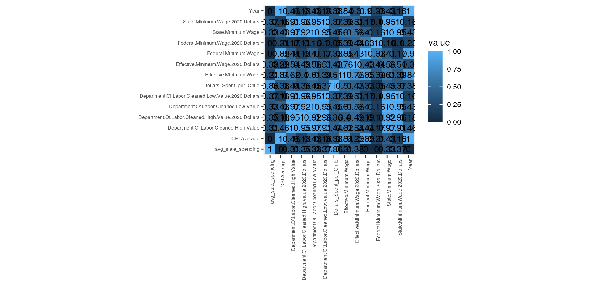
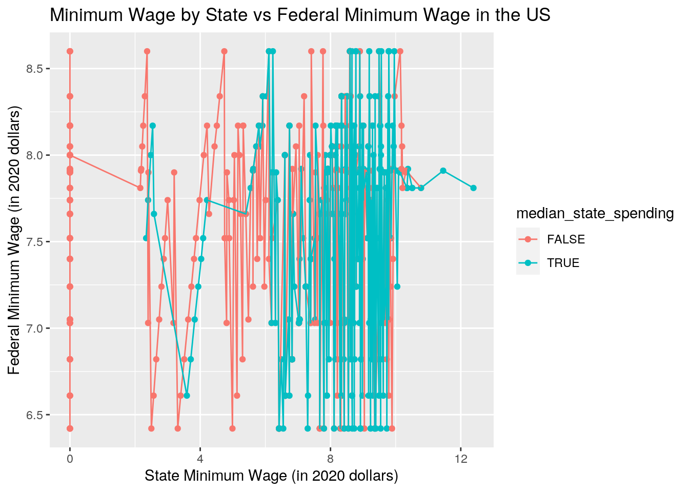
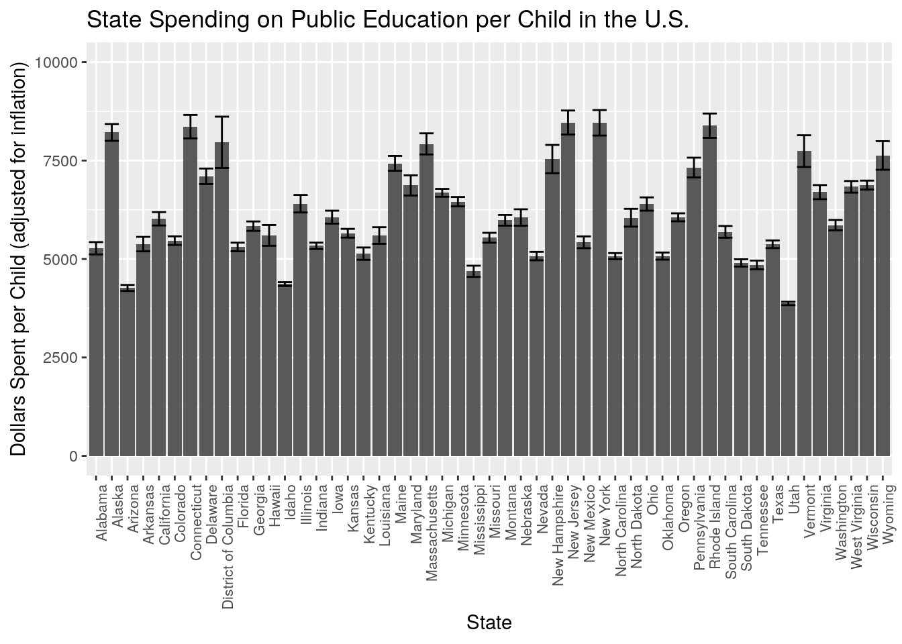
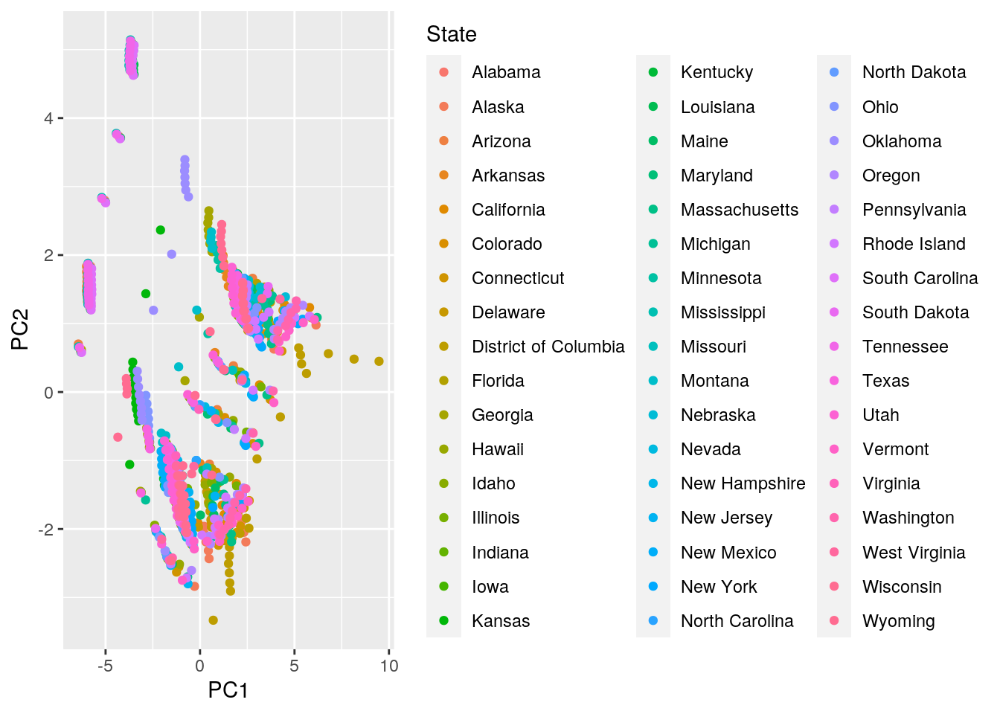
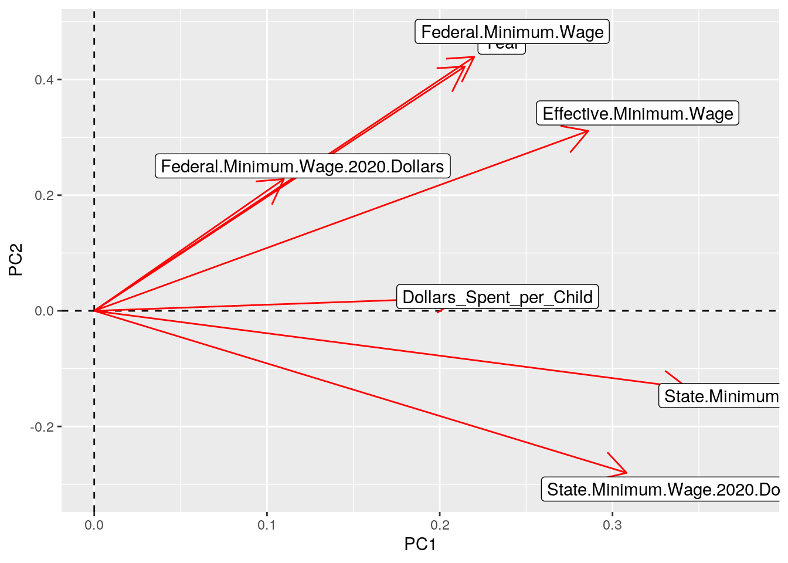

Introduction:
I chose two datasets, one with data on public spending on education per child in each state and another describing minimum wage in the US by state. I thought it would be interesting to study the state-by-state differences in educational spending as I work with children in the education field and hope to go into research regarding children as well. I also believe there will be a relation between the minimum wage of each state and the amount of money they spend for public education per child as states that do not have higher levels spending for wage may also not be willing to spend more toward education. I also feel it is an important relationship to study as children who learn in environments with less money alloted to them, come out of those environments and are not afforded as much pay as well, which leads to a lesser standard of living on top of the probable lesser standard of education upheld in their youth.
The ‘State_Spending_on_Kids’ dataset includes the dollar amount spent on public education per child ages 0-18 every year in each state and territory in the U.S. from the years 1997 to 2016, adjusted for inflation. The variables are the state and each of the years. The ‘Minimum_Wage’ dataset describes the minimum wage in the U.S. by state from the years 1968 to 2017. The variables include the state, the year, the state’s minimum wage, the minimum wage adjusted to 2020 dollars, federal minimum wage that year, effective minimum age (if the federal minimum wage is higher than the state minimum wage than that takes effect instead of what the state sets), effective minimum wage in 2020 dollars. There are other variables as well such as ‘CPI.Average’ (Consumer Price Index Average) in that year, ‘Department.Of.Labor.Cleaned.Low.Value’ which denotes the states lowest enforced minimum wage value, there is also a variable for this value in 2020 dollars, and a ‘Department.Of.Labor.Cleaned.High.Value’ which is the higher enforced minimum value by the state which is the same as the low value in states with only one minimum wage (and a variable for this value in 2020 dollars).
Part 1: Tidying Datasets
library(tidyverse)
library(dplyr)
# dataset 1 State Spending on Kids dataset
library(readr)
State_Spending_on_Kids <- read_csv("State_Spending_on_Kids.csv")
# dataset 2 Minimum Wage dataset
library(readr)
Minimum_Wage <- read_csv("Minimum_Wage_Data.csv")
glimpse(State_Spending_on_Kids)## Rows: 51
## Columns: 21
## $ state <chr> "Alabama", "Alaska", "Arizona", "Arkansas", "California", "Col…
## $ `1997` <dbl> 3929, 7548, 3707, 3891, 4282, 4380, 6697, 5625, 6105, 4454, 46…
## $ `1998` <dbl> 4163, 7127, 3716, 4141, 4653, 4640, 6393, 5736, 7193, 4563, 47…
## $ `1999` <dbl> 4434, 7617, 3810, 4289, 4848, 4762, 7074, 5797, 7727, 4745, 50…
## $ `2000` <dbl> 4598, 7730, 3938, 4399, 5118, 4838, 7257, 6044, 9001, 4682, 52…
## $ `2001` <dbl> 4651, 7948, 4002, 4542, 5559, 5014, 7503, 6237, 9786, 4760, 54…
## $ `2002` <dbl> 4742, 8204, 4071, 4707, 6029, 5256, 7816, 6482, 10712, 4856, 5…
## $ `2003` <dbl> 4831, 8377, 4268, 4906, 6109, 5414, 8033, 6745, 11455, 5070, 5…
## $ `2004` <dbl> 4879, 8477, 4412, 5049, 6169, 5559, 8239, 6946, 12074, 5213, 5…
## $ `2005` <dbl> 5064, 8800, 4430, 5509, 6209, 5629, 8358, 7169, 12693, 5381, 5…
## $ `2006` <dbl> 5407, 9063, 4514, 5644, 6301, 5736, 8670, 7456, 12837, 5563, 6…
## $ `2007` <dbl> 5830, 9467, 4610, 5741, 6641, 5648, 8953, 7122, 12505, 5915, 6…
## $ `2008` <dbl> 6209, 10976, 4800, 5780, 6818, 6077, 9281, 7452, 16310, 6074, …
## $ `2009` <dbl> 6107, 11694, 4860, 6205, 6663, 5840, 9889, 7246, 17352, 5847, …
## $ `2010` <dbl> 6029, 11966, 4727, 6552, 6377, 5915, 10060, 7348, 18810, 5788,…
## $ `2011` <dbl> 5976, 11939, 4489, 6622, 6158, 5747, 9785, 7580, 17640, 5840, …
## $ `2012` <dbl> 5652, 11260, 4329, 5966, 6191, 5565, 9856, 8136, 17892, 5414, …
## $ `2013` <dbl> 5738, 11628, 4080, 5888, 6117, 5588, 9967, 8059, 17281, 5381, …
## $ `2014` <dbl> 5780, 11505, 4230, 5903, 6240, 5767, 10295, 8148, 16983, 5517,…
## $ `2015` <dbl> 5764, 12108, 4145, 5912, 6761, 5874, 10561, 8229, 17097, 5541,…
## $ `2016` <dbl> 5671, 10627, 4146, 5928, 7165, 6062, 10810, 8438, 17658, 5504,…glimpse(Minimum_Wage)## Rows: 2,862
## Columns: 15
## $ Year <dbl> 1968, 1968, 1968,…
## $ State <chr> "Alabama", "Alask…
## $ State.Minimum.Wage <dbl> 0.00000, 2.10000,…
## $ State.Minimum.Wage.2020.Dollars <dbl> 0.00, 15.61, 3.48…
## $ Federal.Minimum.Wage <dbl> 1.15, 1.15, 1.15,…
## $ Federal.Minimum.Wage.2020.Dollars <dbl> 8.55, 8.55, 8.55,…
## $ Effective.Minimum.Wage <dbl> 1.15, 2.10, 1.15,…
## $ Effective.Minimum.Wage.2020.Dollars <dbl> 8.55, 15.61, 8.55…
## $ CPI.Average <dbl> 34.8, 34.8, 34.8,…
## $ Department.Of.Labor.Uncleaned.Data <chr> "...", "2.1", "18…
## $ Department.Of.Labor.Cleaned.Low.Value <dbl> 0.00000, 2.10000,…
## $ Department.Of.Labor.Cleaned.Low.Value.2020.Dollars <dbl> 0.00, 15.61, 3.48…
## $ Department.Of.Labor.Cleaned.High.Value <dbl> 0.00000, 2.10000,…
## $ Department.Of.Labor.Cleaned.High.Value.2020.Dollars <dbl> 0.00, 15.61, 4.91…
## $ Footnote <chr> NA, NA, "(b)", "(…# Reading in and briefly viewing original datasetsnew_State_Spending <- State_Spending_on_Kids %>% pivot_longer(contains(c("0",
"1")), names_to = "Year", values_to = "Dollars_Spent_per_Child") %>%
rename(State = state)
new_State_Spending$Year <- as.numeric(as.character(new_State_Spending$Year)) #changed Year column from character to numeric
glimpse(new_State_Spending)## Rows: 1,020
## Columns: 3
## $ State <chr> "Alabama", "Alabama", "Alabama", "Alabama", "…
## $ Year <dbl> 2000, 2001, 2002, 2003, 2004, 2005, 2006, 200…
## $ Dollars_Spent_per_Child <dbl> 4598, 4651, 4742, 4831, 4879, 5064, 5407, 583…new_Minimum_Wage <- Minimum_Wage %>% select(-Footnote, -Department.Of.Labor.Uncleaned.Data) %>%
select(State, everything()) %>% arrange(State)
glimpse(new_Minimum_Wage)## Rows: 2,862
## Columns: 13
## $ State <chr> "Alabama", "Alaba…
## $ Year <dbl> 1968, 1969, 1970,…
## $ State.Minimum.Wage <dbl> 0, 0, 0, 0, 0, 0,…
## $ State.Minimum.Wage.2020.Dollars <dbl> 0, 0, 0, 0, 0, 0,…
## $ Federal.Minimum.Wage <dbl> 1.15, 1.15, 1.30,…
## $ Federal.Minimum.Wage.2020.Dollars <dbl> 8.55, 8.11, 8.67,…
## $ Effective.Minimum.Wage <dbl> 1.15, 1.15, 1.30,…
## $ Effective.Minimum.Wage.2020.Dollars <dbl> 8.55, 8.11, 8.67,…
## $ CPI.Average <dbl> 34.8, 36.7, 38.8,…
## $ Department.Of.Labor.Cleaned.Low.Value <dbl> 0, 0, 0, 0, 0, 0,…
## $ Department.Of.Labor.Cleaned.Low.Value.2020.Dollars <dbl> 0, 0, 0, 0, 0, 0,…
## $ Department.Of.Labor.Cleaned.High.Value <dbl> 0, 0, 0, 0, 0, 0,…
## $ Department.Of.Labor.Cleaned.High.Value.2020.Dollars <dbl> 0, 0, 0, 0, 0, 0,…I created separate variables for ‘Year’ and ‘Dollars Spent per Child’ in the ‘State_Spending_on_Kids’ dataset, by taking the rows with year values and assigning them to the year variable using common numbers in all of the years (0 and 1) and assigning their values to the ‘Dollars Spent per Child’ variable. The ‘Minimum_Wage’ dataset was already tidy in that I was not able to use pivot wider/longer to change anything the way I did with the first dataset, so I just deleted irrelevant columns (the footnotes, and a column with unclean data from the Dept. of Labor). I also arranged this dataset to match the first dataset with the state first and in alphabetical order.
Part 2: Join Datasets
new_states <- inner_join(new_State_Spending, new_Minimum_Wage,
by = c("State", "Year"), all.x = TRUE)
glimpse(new_states)## Rows: 1,020
## Columns: 14
## $ State <chr> "Alabama", "Alaba…
## $ Year <dbl> 2000, 2001, 2002,…
## $ Dollars_Spent_per_Child <dbl> 4598, 4651, 4742,…
## $ State.Minimum.Wage <dbl> 0.00, 0.00, 0.00,…
## $ State.Minimum.Wage.2020.Dollars <dbl> 0.00, 0.00, 0.00,…
## $ Federal.Minimum.Wage <dbl> 5.15, 5.15, 5.15,…
## $ Federal.Minimum.Wage.2020.Dollars <dbl> 7.74, 7.52, 7.40,…
## $ Effective.Minimum.Wage <dbl> 5.15, 5.15, 5.15,…
## $ Effective.Minimum.Wage.2020.Dollars <dbl> 7.74, 7.52, 7.40,…
## $ CPI.Average <dbl> 172.200, 177.100,…
## $ Department.Of.Labor.Cleaned.Low.Value <dbl> 0.00, 0.00, 0.00,…
## $ Department.Of.Labor.Cleaned.Low.Value.2020.Dollars <dbl> 0.00, 0.00, 0.00,…
## $ Department.Of.Labor.Cleaned.High.Value <dbl> 0.00, 0.00, 0.00,…
## $ Department.Of.Labor.Cleaned.High.Value.2020.Dollars <dbl> 0.00, 0.00, 0.00,…new_State_Spending %>% nrow()## [1] 1020new_Minimum_Wage %>% nrow()## [1] 2862new_states %>% nrow()## [1] 10202862 - 1020 #1842 observations lost; all from first dataset retained## [1] 1842I conducted an inner join on the two datasets I am analyzing. I chose this type of join because the ‘Minimum_Wage’ dataset includes territories and extra years in comparison to the ‘State_Spending_on_Kids’ dataset and I only wanted to compare states. This resulted in 1842 observations dropped. The dropped cases could pose an issue in detecting patterns as it rids the dataset of more information that was available (in regards to years and location) that could have been used to identify trends, but I felt it was more beneficial to directly compare the years and areas available in both datasets. I joined the datasets using both states and years in common, I decided to retain the District of Columbia as it is the nation’s capitol and functions basically independently, and is on the mainland of the U.S.
Part 3: Data Wrangling
new_states_1 <- new_states %>% group_by(State) %>% summarize(avg_state_spending = mean(Dollars_Spent_per_Child)) %>%
arrange(desc(avg_state_spending))
new_states_1 %>% summarize(median(avg_state_spending)) #Median is $6020.40/child/year## # A tibble: 1 x 1
## `median(avg_state_spending)`
## <dbl>
## 1 6020.new_states_1 <- new_states_1 %>% mutate(median_state_spending = as.factor(avg_state_spending >
median(avg_state_spending))) #Creating categorical variable
new_states_2 <- right_join(new_states, new_states_1, by = "State")
new_states_2 %>% group_by(median_state_spending) %>% summarize(mean(Effective.Minimum.Wage.2020.Dollars)) #above median, higher mean EMW## # A tibble: 2 x 2
## median_state_spending `mean(Effective.Minimum.Wage.2020.Dollars)`
## <fct> <dbl>
## 1 FALSE 7.87
## 2 TRUE 8.29new_states_2 %>% group_by(median_state_spending) %>% summarize(mean(State.Minimum.Wage.2020.Dollars)) #above median, higher mean SMW## # A tibble: 2 x 2
## median_state_spending `mean(State.Minimum.Wage.2020.Dollars)`
## <fct> <dbl>
## 1 FALSE 5.67
## 2 TRUE 8.09new_states_2 %>% group_by(median_state_spending) %>% mutate(avg_state_min_wage = mean(State.Minimum.Wage.2020.Dollars)) #New mean SMW variable## # A tibble: 1,020 x 17
## # Groups: median_state_spending [2]
## State Year Dollars_Spent_p… State.Minimum.W… State.Minimum.W…
## <chr> <dbl> <dbl> <dbl> <dbl>
## 1 Alab… 2000 4598 0 0
## 2 Alab… 2001 4651 0 0
## 3 Alab… 2002 4742 0 0
## 4 Alab… 2003 4831 0 0
## 5 Alab… 2004 4879 0 0
## 6 Alab… 2005 5064 0 0
## 7 Alab… 2006 5407 0 0
## 8 Alab… 2007 5830 0 0
## 9 Alab… 2008 6209 0 0
## 10 Alab… 2009 6107 0 0
## # … with 1,010 more rows, and 12 more variables: Federal.Minimum.Wage <dbl>,
## # Federal.Minimum.Wage.2020.Dollars <dbl>, Effective.Minimum.Wage <dbl>,
## # Effective.Minimum.Wage.2020.Dollars <dbl>, CPI.Average <dbl>,
## # Department.Of.Labor.Cleaned.Low.Value <dbl>,
## # Department.Of.Labor.Cleaned.Low.Value.2020.Dollars <dbl>,
## # Department.Of.Labor.Cleaned.High.Value <dbl>,
## # Department.Of.Labor.Cleaned.High.Value.2020.Dollars <dbl>,
## # avg_state_spending <dbl>, median_state_spending <fct>,
## # avg_state_min_wage <dbl>new_states_2 %>% group_by(median_state_spending) %>% summarize(sd(State.Minimum.Wage.2020.Dollars)) #below the median, greater variance SMW## # A tibble: 2 x 2
## median_state_spending `sd(State.Minimum.Wage.2020.Dollars)`
## <fct> <dbl>
## 1 FALSE 3.42
## 2 TRUE 1.27new_states_2 %>% group_by(State) %>% summarize(sd = sd(State.Minimum.Wage)) %>%
arrange(desc(sd)) #Arizona## # A tibble: 51 x 2
## State sd
## <chr> <dbl>
## 1 Arizona 3.86
## 2 Florida 3.78
## 3 Kansas 2.25
## 4 Ohio 2.16
## 5 District of Columbia 1.60
## 6 Wyoming 1.58
## 7 Texas 1.56
## 8 New York 1.53
## 9 Washington 1.50
## 10 New Mexico 1.49
## # … with 41 more rowsnew_states_2 %>% group_by(State) %>% summarize(mean = mean(State.Minimum.Wage)) %>%
arrange(desc(mean)) #Oregon## # A tibble: 51 x 2
## State mean
## <chr> <dbl>
## 1 Oregon 7.63
## 2 Washington 7.61
## 3 District of Columbia 7.42
## 4 Connecticut 7.33
## 5 Vermont 7.25
## 6 Massachusetts 7.24
## 7 California 7.22
## 8 Alaska 7.04
## 9 Rhode Island 6.93
## 10 Illinois 6.76
## # … with 41 more rowsnew_states_2 %>% select(Effective.Minimum.Wage, Federal.Minimum.Wage) %>%
filter(Effective.Minimum.Wage == Federal.Minimum.Wage) %>%
summarize(n()) #Federal Min Wage being enforced 678 times## # A tibble: 1 x 1
## `n()`
## <int>
## 1 678new_states_2 %>% filter(Effective.Minimum.Wage == Federal.Minimum.Wage) %>%
summarize_all(n_distinct) #45 different states, the FMW only changed 5x## # A tibble: 1 x 16
## State Year Dollars_Spent_p… State.Minimum.W… State.Minimum.W…
## <int> <int> <int> <int> <int>
## 1 45 20 629 20 122
## # … with 11 more variables: Federal.Minimum.Wage <int>,
## # Federal.Minimum.Wage.2020.Dollars <int>, Effective.Minimum.Wage <int>,
## # Effective.Minimum.Wage.2020.Dollars <int>, CPI.Average <int>,
## # Department.Of.Labor.Cleaned.Low.Value <int>,
## # Department.Of.Labor.Cleaned.Low.Value.2020.Dollars <int>,
## # Department.Of.Labor.Cleaned.High.Value <int>,
## # Department.Of.Labor.Cleaned.High.Value.2020.Dollars <int>,
## # avg_state_spending <int>, median_state_spending <int>cormat <- new_states_2 %>% select_if(is.numeric) %>% cor(use = "pair")
tidycor <- cormat %>% as.data.frame %>% rownames_to_column("var1") %>%
pivot_longer(-1, names_to = "var2", values_to = "correlation")
tidycor## # A tibble: 196 x 3
## var1 var2 correlation
## <chr> <chr> <dbl>
## 1 Year Year 1
## 2 Year Dollars_Spent_per_Child 0.376
## 3 Year State.Minimum.Wage 0.428
## 4 Year State.Minimum.Wage.2020.Dollars 0.157
## 5 Year Federal.Minimum.Wage 0.900
## 6 Year Federal.Minimum.Wage.2020.Dollars 0.233
## 7 Year Effective.Minimum.Wage 0.842
## 8 Year Effective.Minimum.Wage.2020.Dollars 0.298
## 9 Year CPI.Average 0.995
## 10 Year Department.Of.Labor.Cleaned.Low.Value 0.428
## # … with 186 more rowsIn this section, I conducted various types of summarizing with the newly joined dataset, even creating another dataset and conducting a right join with mean values for state spending on child education as well as a categorical variable (T/F) for whether or not the state falls above the median value for state spending on child education. The median dollar amount states spent on average in the US on public child education is $6020.40 per child per year.States above the median value for money spent toward children’s public education also had higher values for both Effective Minimum Wage and State Minimum Wage values on average.States below the median value for money spent toward children’s public education had greater variance in State Minumum Wage values on average. Arizona had the greatest variance in State Minimum Wage values, while Oregon had the greatest mean State Minimum Wage value. I also found that the occurrence of Federal Minimum Wage being enforced because it is higher than or equal to the State Minimum Wage value has been recorded 678 times according to this dataset. This has happened in 45 different states, while the Federal Minimum Wage itself has only changed 5 times during this period. I created a correlation matrix in the form of a datasframe as well to view the relationship between the different variables.
Part 4: Visualizing
# Correlation Heatmap
heatmap <- new_states_2 %>% select_if(is.numeric) %>% cor %>%
as.data.frame %>% rownames_to_column %>% pivot_longer(-1) %>%
ggplot(aes(rowname, name, fill = value)) + geom_tile() +
geom_text(aes(label = round(value, 2))) + xlab("") + ylab("") +
theme(axis.text.x = element_text(size = 6, angle = 90, hjust = 1),
axis.text.y = element_text(size = 6)) + coord_fixed()
heatmap
The heatmap created demonstrates a positive relationship between all of the variables analyzed. It also shows that there is a stronger relationship between the variables related to minimum wage than the relationship between spending for children’s education and minimum wage (as I originally hypothesized). However, there is still a correlation between the money spent by states on education and their minimum wage values, it just is not as strong as I had originally theorized.
# Plot 1
plot1 <- new_states_2 %>% ggplot(aes(x = State.Minimum.Wage.2020.Dollars,
y = Federal.Minimum.Wage.2020.Dollars, color = median_state_spending,
group = median_state_spending)) + geom_point(aes(color = median_state_spending)) +
geom_line() + ggtitle("Minimum Wage by State vs Federal Minimum Wage in the US") +
xlab("State Minimum Wage (in 2020 dollars)") + ylab("Federal Minimum Wage (in 2020 dollars)")
plot1
This graph illustrates State Minimum Wage vs Federal Minimum Wage colored by whether or not the state was above the median value for money spent on public education in the U.S. This graph shows that the states that did place above the median in money spent seem to have higher values for State Minimum Wage than the states that did not. It also shows that there is a wider values for minimum wage (variance) in states that place below the median for money spent on public education than those that are above the median line. I aimed to be able to distinguish between the Federal Minimum Wage value and the State Minimum Wage value to tell which was enforced based on the vertical lengths of the lines, but it is a little bit difficult to tell in that they look quite similar for both colors groups.
# Plot 2
plot2 <- new_states_2 %>% ggplot(aes(x = State, y = Dollars_Spent_per_Child,
fill = Effective.Minimum.Wage.2020.Dollars)) + geom_bar(position = "stack",
stat = "summary") + geom_errorbar(stat = "summary") + theme(axis.text.x = element_text(size = 8,
angle = 90, hjust = 1)) + ggtitle("State Spending on Public Education per Child in the U.S.") +
xlab("State") + ylab("Dollars Spent per Child (adjusted for inflation)") +
scale_y_continuous(limits = c(0, 10000))
plot2 This plot shows the dollars spent on public education per child, categorized by state in the U.S., including D.C. It shows that the District of Columbia does spend the most on children’s public education overall, and Utah seems to spend the least. D.C.’s value also seems to have the greatest uncertainty as well. The graph also analyzes the Effective Minimum Wage in each state, showing that most states tend to be around 7-8 dollars, while there are a few states that have values much higher, and those states do not seem to spend more on children’s education, but they do not spend the least either, they seem to rank in the middle.
Part 5: Dimensionality Reduction (PCA)
states_nums <- new_states_2 %>% select_if(is.numeric) %>% scale
rownames(states_nums) <- new_states_2$State
states_pca <- princomp(states_nums)
names(states_pca)## [1] "sdev" "loadings" "center" "scale" "n.obs" "scores" "call"summary(states_pca, loadings = T)## Importance of components:
## Comp.1 Comp.2 Comp.3 Comp.4 Comp.5
## Standard deviation 2.7697291 1.7351504 1.2251560 1.05894180 0.7074486
## Proportion of Variance 0.5484948 0.2152644 0.1073200 0.08017558 0.0357839
## Cumulative Proportion 0.5484948 0.7637593 0.8710793 0.95125487 0.9870388
## Comp.6 Comp.7 Comp.8 Comp.9
## Standard deviation 0.29965854 0.253757184 0.141306557 0.0717454424
## Proportion of Variance 0.00642024 0.004603993 0.001427653 0.0003680329
## Cumulative Proportion 0.99345901 0.998063002 0.999490655 0.9998586877
## Comp.10 Comp.11 Comp.12 Comp.13 Comp.14
## Standard deviation 3.670962e-02 2.009784e-02 1.499710e-02 0 0
## Proportion of Variance 9.635133e-05 2.887997e-05 1.608099e-05 0 0
## Cumulative Proportion 9.999550e-01 9.999839e-01 1.000000e+00 1 1
##
## Loadings:
## Comp.1 Comp.2 Comp.3 Comp.4
## Year 0.214 0.422 0.299
## Dollars_Spent_per_Child 0.212 -0.625 0.127
## State.Minimum.Wage 0.343 -0.133 0.123
## State.Minimum.Wage.2020.Dollars 0.308 -0.280 0.123
## Federal.Minimum.Wage 0.220 0.439
## Federal.Minimum.Wage.2020.Dollars 0.110 0.228 -0.746
## Effective.Minimum.Wage 0.286 0.311
## Comp.5 Comp.6 Comp.7 Comp.8
## Year 0.150 0.145
## Dollars_Spent_per_Child 0.167 -0.710
## State.Minimum.Wage -0.302 -0.403
## State.Minimum.Wage.2020.Dollars -0.272 0.385
## Federal.Minimum.Wage 0.244
## Federal.Minimum.Wage.2020.Dollars 0.478
## Effective.Minimum.Wage -0.377
## Comp.9 Comp.10 Comp.11
## Year 0.799
## Dollars_Spent_per_Child
## State.Minimum.Wage
## State.Minimum.Wage.2020.Dollars
## Federal.Minimum.Wage -0.284 0.166 -0.749
## Federal.Minimum.Wage.2020.Dollars 0.117 0.343
## Effective.Minimum.Wage -0.166 -0.802
## Comp.12 Comp.13 Comp.14
## Year
## Dollars_Spent_per_Child
## State.Minimum.Wage 0.293 -0.299 0.641
## State.Minimum.Wage.2020.Dollars -0.283 0.641 0.299
## Federal.Minimum.Wage
## Federal.Minimum.Wage.2020.Dollars
## Effective.Minimum.Wage
## [ reached getOption("max.print") -- omitted 7 rows ]eigval <- states_pca$sdev^2
varprop = round(eigval/sum(eigval), 2) #proportion of variance explained by each PC
round(cumsum(eigval)/sum(eigval), 2) #cumulative proportion of variance## Comp.1 Comp.2 Comp.3 Comp.4 Comp.5 Comp.6 Comp.7 Comp.8 Comp.9 Comp.10
## 0.55 0.76 0.87 0.95 0.99 0.99 1.00 1.00 1.00 1.00
## Comp.11 Comp.12 Comp.13 Comp.14
## 1.00 1.00 1.00 1.00eigval #eigenvalues## Comp.1 Comp.2 Comp.3 Comp.4 Comp.5 Comp.6
## 7.6713995388 3.0107470829 1.5010073337 1.1213577302 0.5004834896 0.0897952422
## Comp.7 Comp.8 Comp.9 Comp.10 Comp.11 Comp.12
## 0.0643927084 0.0199675429 0.0051474085 0.0013475961 0.0004039232 0.0002249131
## Comp.13 Comp.14
## 0.0000000000 0.0000000000statesdf <- data.frame(State = new_states_2$State, PC1 = states_pca$scores[,
1], PC2 = states_pca$scores[, 2])
ggplot(statesdf, aes(PC1, PC2, color = State)) + geom_point()
# highest on PC1
states_pca$scores[, 1:4] %>% as.data.frame %>% top_n(3, Comp.1)## Comp.1 Comp.2 Comp.3 Comp.4
## District.of.Columbia.14 6.793115 0.5605903 -5.118039 -0.1343190
## District.of.Columbia.15 8.154411 0.4804461 -5.087239 -0.5738404
## District.of.Columbia.16 9.474988 0.4484006 -5.194391 -0.7573850# new_states_2 %>% filter(State%in%c('District of Columbia'))
# lowest PC1
states_pca$scores[, 1:4] %>% as.data.frame %>% top_n(-3, Comp.1)## Comp.1 Comp.2 Comp.3 Comp.4
## Arizona.17 -6.442087 0.7011545 -0.1600623 -1.268721
## Mississippi.17 -6.436897 0.6596927 -0.2326042 -1.294706
## Tennessee.17 -6.377221 0.6500627 -0.4301326 -1.270142# new_states_2 %>% filter(State%in%c('Arizona',
# 'Mississippi', 'Tennessee'))
# highest on PC2
states_pca$scores[, 1:4] %>% as.data.frame %>% top_n(3, wt = Comp.2)## Comp.1 Comp.2 Comp.3 Comp.4
## Alabama.16 -3.598955 5.092636 -0.8340805 0.1976214
## Mississippi.16 -3.681522 5.141837 -0.5118875 0.1884695
## Tennessee.16 -3.680345 5.126009 -0.5370980 0.1781290# new_states_2 %>% filter(State%in%c('Alabama',
# 'Mississippi', 'Tennessee'))
# lowest on PC2
states_pca$scores[, 1:4] %>% as.data.frame %>% top_n(3, wt = desc(Comp.2))## Comp.1 Comp.2 Comp.3 Comp.4
## Alaska.17 -0.2925963 -2.837428 -1.631577 -1.126900
## District.of.Columbia.17 0.7002613 -3.332284 -2.626768 -1.682847
## District.of.Columbia.18 1.6146360 -2.906613 -2.822053 -2.463458# new_states_2 %>% filter(State%in%c('Alaska', 'District of
# Columbia'))
states_pca$loadings[1:7, 1:2] %>% as.data.frame %>% rownames_to_column %>%
ggplot() + geom_hline(aes(yintercept = 0), lty = 2) + geom_vline(aes(xintercept = 0),
lty = 2) + ylab("PC2") + xlab("PC1") + geom_segment(aes(x = 0,
y = 0, xend = Comp.1, yend = Comp.2), arrow = arrow(), col = "red") +
geom_label(aes(x = Comp.1 * 1.1, y = Comp.2 * 1.1, label = rowname))
I ran Principal Components Analysis (PCA) on the dataset to determine the correlation and variance between the different variables. District of Columbia had the top three highest PC1 scores, while the lowest scores were Arizona, Mississippi, and Tennessee. Alaska and the District of Columbia had the lowest PC2 scores, while Alabama, Mississippi, and Tennessee had the highest. This indicates that the District of Columbia had the strongest portfolio regarding minimum wage for workers and money spent for children.